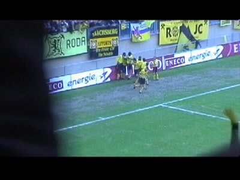
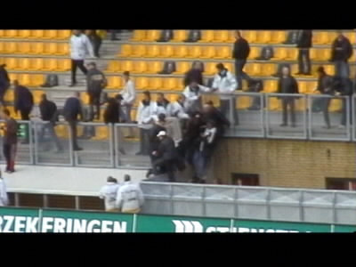

|
Roda JC - Feyenoord 1-0 ( 29 april 2001) deel 2 |
62e minuut. Vrede heeft via de paal en de rug van Dudek
gescoord.

De vreugde en de voorsprong zijn verdiend. De anti-Roda
fluiter Wegereef liet twee keer een handsbal van Feyenoord
onbestraft.
Hier wordt Fatih Sonkaya opgelapt door Norbert Keulen.
Anastasiou scoort 2-0, echter het doelpunt wordt door onze
vriend Wegereef afgekeurd!
Het wordt welhaast een vanzelfsprekend tafereel!

De wedstrijd verliep zonder noemenswaardige incidenten.
Hier klimmen enkele Feyenoord-supporters over een muurtje.
Waarschijnlijk waren ze er niet zo blij mee dat ze een kwartier
in het vak moesten blijven :-)
Je snapt het niet.....Vicelich speelt nooit en toch zie je fans
in zijn shirt rondlopen.....
En alweer eindige een zonnige dag met een nat pak. Over
pakweg een jaar ziet deze oostzijde er wel even anders uit!
Eerste 10 foto's
©KPD